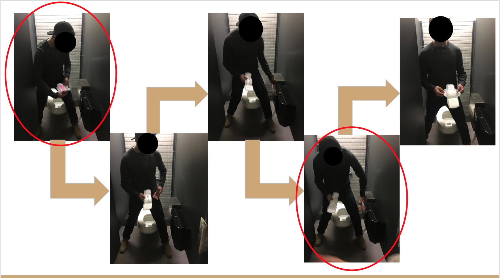

The goal of this class is to find whitespace and design in that space. The problem we chose to tackle was the poor feminine product disposal experience in public bathroom stalls.
Contribution
Brainstormed, built prototypes and built the final mockup with the team
Pain Points
We discovered three main pain points.
- It was difficult to dispose of the product without touching the flap opening, therefore contaminating the flap with blood and potentially coming into contact with the blood of others.
- It was difficult to place the used tampon/pad in the box because the user only has one hand at that point in the process and the flap was spring loaded.
- Through discussion and observation we also learned that it was difficult to clean the device without coming in contact with the blood of others
Mockups
We created initial mockups, addressing the problems we found with current designs and then iterated, making a higher fidelity mockup.
Final Design
The final product was a simple box with a piano hinge opening. This opening was covered by the removal bag so the flaps were ”cleaned” every time the bag was changed.
The piano hinges rested at 90 degrees but would fold in under the weight of an object to allow someone to drop items in and would fold out to allow the bag to be pulled up and out of the device.
The device was easy to clean, as someone would just have to untie the side string, pull the bag closed and seal it, then pull the bag up to remove.
There was also a metal collar around the top edge of the device that the bag was attached to. As the bag became heavier, it would pull the collar up, and serve as a subtle indicator of the fullness of the device.
We also wrote a provisional patent and business plan as final deliverables.